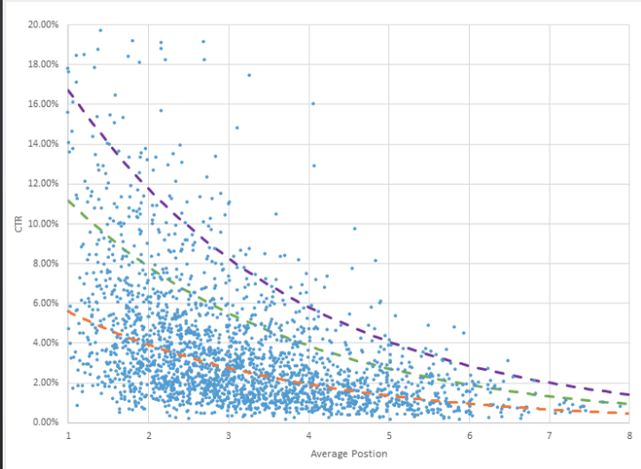
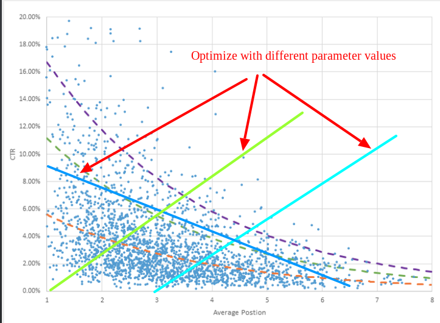
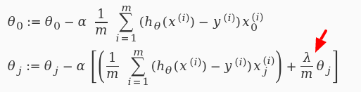

Machine learning and content management
Slides are hosted on github, press 's' if you want to read speaker notes too.
All links mentioned in the presentation will be posted in the last slide
This talk is largely based on my Drupal Europe presentation
Main feedback that I got is that the session contained too much of math.
I cannot completely avoid mathematics when talking about machine learning,
but tried to reduce its usage to reasonable minimum. Hold tight!
About me
Valery "valthebald" Lourie
Drupal Developer, FFW Agency
Agenda
What we will discuss
What is machine learning
Supervised learning
Linear regression
Online learning
References
This short introduction is inspired by the excellent coure of Stanford University,
available online (link will be in the references section).
Agenda
What we will not discuss
Use of commercial APIs
Auto tagging
Neural networks
Non-supervised learning
When robots will take over the world
Since machine learning is a very wide topic, we will be able to discuss only small part of it.
Luckily, there are many resources, including Drupal-specific, that can help you in using ML in your everyday activity
So first, we will skip ready, commercial APIs from companies like Google (Cloud API), or MicroSoft (Azure Cognitive Services).
Both have Drupal modules and work with either pretrained or DIY data sets, for the real life examples of integrating Google SDKs with local
news service Patch.com you can watch Pantheon's webinar (link in the end).
We also will not talk about tasks that have known solutions, and even Drupal modules - for the list of those I recommend reading OpenSense post
on top Drupal modules that use AI.
In other words, let's jump to the land of unknown, and start from the basics - what is machine learning
Field of study that gives computers the ability to learn without being explicitly programmed
Arthur Samuel
Here's one of the first definitions of machine learning.
Being intuitive, it doesn't give us much idea of where to start from
A computer program is said to learn from experience E with respect to some class of tasks T and performance measure P, if its performance at tasks in T, as measured by P, improves with experience E.
Tom Mitchell
This one is more "formal". Let's now understand what are variable E, T, and P
Let's imagine you build a site with multiple pages. You can have different monetizing models: you can sell items,
profit from advertiser, or get financed by some government organisation based on your traffic numbers.
You have a lot of items to "sell" to the customer (in quotes because money is not always involved in the process),
and you constantly adding new items.
You have few areas where you list important (from your PoV) items: top menu, featured block etc.
You can even measure performance of those items using A/B testing tools.
But if you a new item with no known performance, how do you decide whether to replace existing featured items? Let's try
to formulate the question in the terms of the previous slide.
T - predicting CTR, average purchase, time on page etc.
E - data collected from analytics data or/and webserver log analysis
P - difference between predicted and actual performance.
Supervised learning
We know "correct" values
Regression
Classification
Before digging into Umami dilemma, let's first talk about machine learning tasks types - i.e. T in the definition of machine learning
One group of task classes is supervised learning. It's when our experimental data E is "labelled",
i.e. for every item in E we know "correct" value - i.e. what is CTR.
Regression - predicted values are within continious range, i.e.
Given a picture of Male/Female, We have to predict his/her age on the basis of given picture.
Classification - predicted value is boolean, i.e. given a picture of Male/Female, We have to predict Whether He/She is of High school, College, Graduate age. Another Example for Classification - Banks have to decide whether or not to give a loan to someone on the basis of his credit history.
Unsupervised learning
Unlabeled data
Clustering
Dimension reduction
Anomaly detection
Learning flow
Initialize hypothesis function parameters
Learn using training set
Validate using validation set
Here is the training flow, independent of class type
Learning is essentially minimizing the chosen cost function.
What do depend on the class type, are hypothesis and cost functions
E - experimental data
Features
Position in the list
Visitor demographics (country/language)
Time (weekday/hour)
Previous history of actions
Current page data (taxonomy)
Update date of the content
Labels
Time on page
CTR
Probability of purchase
Average purchase amount
Given that all of values that we need to predict lay in continuous range, we're talking about regression class of tasks.
Most popular hypothesis function used in regression task is linear function.
Linear regression
Experimental data

Taken from https://www.wordstream.com/adwords-click-through-rate
Let's start with regression task that has one label and one feature. Here we can see experimental data on CTR as
a function of position in Google's search results. I assume similar date you can obtain by measuring CTR of products
depending on their position in the featured products block.
Linear regression
Hypothesis
\[ h = \mathbf{θ}_0 + \mathbf{θ}_1 \times X\]

\[Light green: \mathbf{θ}_0 = 0; \mathbf{θ}_1 = 0.1; \]
\[Light blue: \mathbf{θ}_0 = -0.3; \mathbf{θ}_1 = 0.1; \]
\[Dark blue: \mathbf{θ}_0 = 9; \mathbf{θ}_1 = -0.05; \]
The simplest and by far the most popular method for approximating experimental data is linear regression,
i.e. hypothesis function - our prediction function - is the linear function
Mathematicians use these fancy variable names theta to confuse everyone, but essentially function on the slide describes
a line. Line has 2 parameters: offset from 0 (theta_0) and slope (theta_1)
Our task is to find such values of theta that "fit better" experimental data.
Intuitively it's clear that dark blue line more accurately describes the experimental data
(thus can predict CTR for the new products).
More accurate means smaller difference between predicted and experimental data.
What we need to do is go over all experimental data, and sum the distance from predicted and actial values
Linear regression
Hypothesis
\[ h = \mathbf{θ}_0 + \mathbf{θ}_1 \times X\]
Cost function
\[ J(θ) = \frac1{2m} \sum_{i=1}^m \left( h(X^{(i)}) - y^{(i)} \right)^2 \]
Don't be scared, this is the same formula - sum of distances between predicted and experimental data,
divided by the number of samples.
m - number of samples in the training set.
Gradient descent
To find the best values of theta, we start from random values (typically from zeros, but can be any starting point),
perform small change of theta, and then change them towards the direction of smaller error values
In general case, final result of gradient descent is not necessarily the best one - pitfall of local minimums.
Luckily, for linear regression cost function is always convex, so we end up at the global minimum.
(Another reason for popularity of linear regression)
Gradient descent
By Indeed123 - commons, CC BY-SA 3.0, https://commons.wikimedia.org/w/index.php?curid=5508870
Convex function of 2 variables with one global maximum
Gradient descent
Formal definition
\[ \mathbf{θ}_j = \mathbf{θ}_j - α \frac{\partial}{\partial\mathbf{θ}_j} J(θ) \]
Repeat until convergence
m - number of samples in the training set.
Gradient descent with one feature
Derivatives
\[ \frac{\partial}{\partial\mathbf{θ}_0} J(θ) = \frac1m \sum_{i=1}^m \left( h(X^{(i)}) - y^{(i)} \right) \]
\[ \frac{\partial}{\partial\mathbf{θ}_1} J(θ) = \frac1m \sum_{i=1}^m \left( h(X^{(i)}) - y^{(i)} \right) \times X^{(i)}\]
Linear regression
Experimental data
You can't bring the cost to 0!
You can see that there are points that have the same feature value, but different label.
That means one dimension, one feature linear function is not a good choice.
More features
\[h = \mathbf{θ}_0 + \mathbf{θ}_1 \times {X}_1 \]
\[h = \mathbf{θ}_0 + \mathbf{θ}_1 \times {X}_1 + \mathbf{θ}_2 \times {X}_2\]
\[h = \mathbf{θ}_0 + \mathbf{θ}_1 \times {X}_1 + ... \mathbf{θ}_N \times {X}_N\]
Let's agree that \[ {X}_0 = 0 \]
\[h = \mathbf{θ}_0 \times {X}_0 + \mathbf{θ}_1 \times {X}_1 + \mathbf{θ}_2 \times {X}_2 + ... \mathbf{θ}_N \times {X}_N\]
\[h = \mathbf{θ} \times {X}\]
Adding new features is also a way to have non-linear derivatives of original features, but still use linear regression.
In our example my guess would be that logarithm function is better approximation than line.
But we still can use linear regression, if we add a new feature theta_2, that will be equal to logarithm of theta_1
There are also naturally other features, like price, country, brand, date of release (freshness) etc.
Country and brand are themselves not single, but multiple features:
If you're not Donald Trump, you're probably won't tell that US is no.1, UK is no.2 etc. - but even then, how can you assign values
to other countries? Correct way is to have multiple features, each one having value 0 or 1 - so if we sell to 50 countries,
we should define 50 binary features.
Gradient descent multiple features
\[ \frac{\partial}{\partial\mathbf{θ}_0} J(θ) = \frac1m \sum_{i=1}^m \left( h(X^{(i)}) - y^{(i)} \right) \]
\[ \frac{\partial}{\partial\mathbf{θ}_1} J(θ) = \frac1m \sum_{i=1}^m \left( h(X^{(i)}) - y^{(i)} \right) \times \mathbf{X}_1^{(i)}\]
\[ \frac{\partial}{\partial\mathbf{θ}_2} J(θ) = \frac1m \sum_{i=1}^m \left( h(X^{(i)}) - y^{(i)} \right) \times \mathbf{X}_2^{(i)}\]
...
\[ \frac{\partial}{\partial\mathbf{θ}_N} J(θ) = \frac1m \sum_{i=1}^m \left( h(X^{(i)}) - y^{(i)} \right) \times \mathbf{X}_N^{(i)}\]
Less features!

Let's penalize new features!
Better way to use/select non-linear features is to use layered structure (neural networks),
that can itself learn importance of certain feature combinations.
Validating the model
Training set: 60%
Cross validation set: 20%
Test set: 20%
Optimize the parameters in Θ using the training set for each polynomial degree.
Find polynomial degree with least error using cross validation
Estimate generalization error using test set
Working with large data set
Stochastic gradient descent
\[ θ = θ - α \times \frac1{2m} \sum_{i=1}^m \left( h(X^{(i)}) - y^{(i)} \right) \times X \]
Let's address the first challenge when working with website visitors data - it is huge.
We calculate the cost function by going over ALL data items, and compare predicted and actual label values.
We do that for every step of changing parameters. This method is reliable, but slow
Working with large data set
Stochastic gradient descent
Shuffle training set
Perform gradient descent for single example
Choose low α!
What if we take even smaller steps, but get some benefit from going over not the full set of experimental data,
but only one?
This method called stochastic gradient descent. Due to its nature, it's not guaranteed that you only go down finding the global minimum of cost function,
but if you have large, randomly distributed set, you'll get to the point - and much quicker than in case of "regular" gradient descent
(which is also called batch gradient descent)
Online learning
Process training examples as they go
Adjust parameters θ after every example
Throw examples immediately
Bonus: adjust to changing users preferences
Online learning is the process when you don't have static experimental data,
but instead you constantly get a stream of new items.
This is very similar to stochastic gradient descent process that we have seen on the previous slide.
We get data items one by one, adjust theta values by small portion, and immediately throw away incoming data.
Bonus - we adjust to changing user preferences!
Features
Visitor demographics (country/language)
Time (weekday/hour)
Previous history of actions
Current page data (taxonomy)
Update date of the content
Split test and feedback